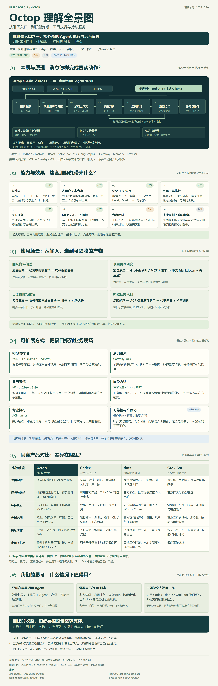

OPEN-SOURCE AGENT PLATFORM
一个请求，
连接 AI 与
真实的工作。
群聊、私聊、网页和定时任务，都可以成为入口。
Octop 在后台组织模型、记忆、知识库和工具执行，
形成可以自行部署和管理的 Agent 服务。
RESEARCH BRIEF / 一图总览
先把这六件事，
说清楚。
能力带来哪些产物？自建解决什么问题？
把功能、使用价值和判断依据连起来看。
- 能力与效果
- 整合多入口、多用户与专家、模型、记忆、知识库、定时任务和工具；配置并授权后，可交付带来源的回答、报告文件、更新简报或代码差异。
- 本质是群聊吗？
- 群聊只是交互入口之一。后台识别用户与专家，准备上下文，由模型提出工具调用，再由运行时执行、回传和保存；私聊、网页、API、定时触发也能走这条链路。
- 适合什么场景？
- 团队内部资料问答、项目更新研究、获授权日志分析，以及通过 ACP 派给编程助手的代码任务。场景是否成立，要看真实工具、数据和可检查的产物。
- 还可以怎样扩展？
- 用 MCP 或连接器接工单、CRM、运维和内部 API；用专家、技能与脚本封装岗位流程；用 ACP 接外部 Agent，或增加渠道、模型与存储。新业务流程仍需另行开发和验收。
- 和现成产品相比呢？
- Codex、dots、官方 Grok 产品也有工具与执行能力。Octop 的主要差异是自部署、国内 IM、内网接入及模型和源码的控制；个人通用任务是否值得自建，要算维护投入。
- 它的价值与意义
- 把一次性对话组织成可重复使用的团队服务，让业务从熟悉的入口调用 AI 并留下产物。收益来自整合与控制；模型智力、任务完成率和重启恢复能力仍要分别验证。

放大阅读 ↗下载 SVG ↓

01 / CAPABILITIES
从“能聊天”，
到一套可管理的服务。
模型负责判断，工具负责动作，平台把它们连接起来。
先看已有什么，再看需要配置什么。
本页的验证范围：核对固定版本文档与选定源码，未启动 Octop 实例或调用付费模型。下面的交互解释机制，情景和产物均为示意。
查看证据02 / UNDER THE HOOD
一句话，
是怎样变成一个动作的？
跟着一个请求走过七步。
观察模型、运行时与工具各自负责什么。
读取获授权目录中的日志，分析错误，把报告保存到工作区。
统一消息入口与回传
模型、工具与会话运行时
长期记忆与检索
浏览器自动化
单进程服务 · Python 3.12+ / FastAPI · React 控制台 · LangGraph 智能体运行时 · SQLite / PostgreSQL 控制面数据库
控制面数据库管理用户、专家、通道、任务等记录；工作区保存专家文件和产物。文件存储后端与数据库后端需要分别配置。
03 / POSITIONING
能力会重叠，
选择取决于你要掌握哪一层。
Codex、dots、Grok Bot 也有工具和执行能力。
Octop 的差异集中在自部署、业务接入和源码定制。
先区分 Grok 的两种形态：官方聊天入口提供聊天、搜索、资料分析与内容生成；下表另外纳入官方 Grok Bot的常驻电脑与任务协作形态。Bot 的执行能力不默认适用于每个普通聊天会话。
| 比较维度 | Octop自行管理的助手平台 | Codex任务与工程执行工具 | dots持续职责与主动跟进 | Grok Bot官方常驻 Bot 团队 |
|---|
WHAT DO YOU NEED?
此处 Grok Bot 指官方常驻智能体产品；Codex 同时包含应用、CLI / SDK 等形态。产品开放范围与账号能力可能变化，请以所链接的当前官方文档为准。
04 / OUR QUESTIONS
从“能做什么”，
追问“为什么值得做”。
把讨论中形成的判断留下来。
每个判断都配一个可以继续验证的问题。
功能清单
能接哪些模型、渠道和工具？
服务端组织
身份、上下文与执行如何协作？
真实执行
谁运行工具，产物保存在哪里？
自建的价值
控制需求能否支撑维护投入？
自建的收益，要由必要的控制需求支撑；
实际的可靠性，要用任务与产物来验证。
05 / EXTENSION PATHS
沿着现有接口扩展，
先交付一个完整的小任务。
从配置、协议到工程改造，逐步增加投入。
每条路径都写清接入位置与需要交付的证据。
我们的第一个合理扩展：项目更新研究助手。
项目清单 → GitHub 信息源 → 变更判断 → 带来源的 Markdown → 渠道通知。先验证去重、失败恢复和产物质量，再加入更多专家。
EVIDENCE / READING ROOM
让每个理解，
都能回到来源。
Octop 文档与源码链接固定到研究提交。
产品对比来自官方文档，核查日期为 2026.10.20。


研究方式：固定版本文档与源码核查、官方产品文档比较，以及本研究网页的静态和浏览器验证。尚未验证 Octop 的安装运行、跨平台通道、模型调用、业务成功率或恢复能力。方案与决策建议均标为我们的判断。上游 MIT 许可随源码快照保留。